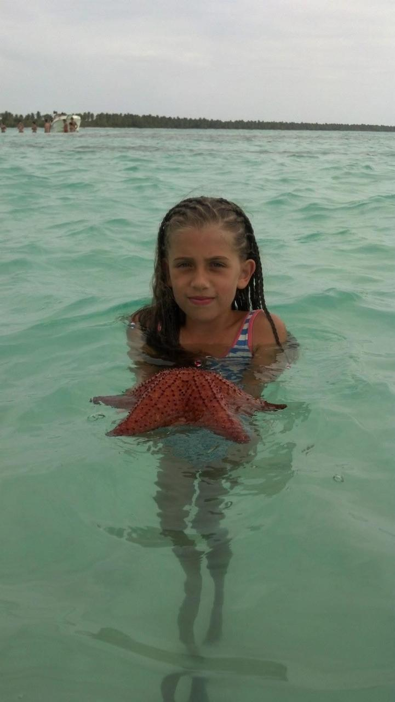

Isla Saona
Isla Saona es un paraíso caribeño ubicado frente a las costas de Punta Cana, famoso por sus playas de arena blanca, aguas turquesas y palmeras infinitas.
Visitar Isla Saona es como adentrarse en una postal perfecta del Caribe. A solo unos kilómetros de Punta Cana, esta isla forma parte del Parque Nacional Cotubanamá y está protegida por su biodiversidad y belleza natural. Sus aguas cristalinas invitan a nadar, bucear y relajarse como en pocos lugares del mundo. Lo que hace especial a Isla Saona no es solo su paisaje paradisíaco, sino la sensación de desconexión total que ofrece: no hay grandes construcciones, ni carreteras, ni bullicio urbano, solo el sonido del mar, el viento entre las palmas y el ritmo pausado de la naturaleza. Es un escape ideal para reconectar con lo esencial y disfrutar de la belleza más pura del Caribe dominicano.
- Duración del recorrido: 12 hs en total de excursión
- Dificultad: Ninguna
- Mejor época: Verano